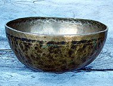
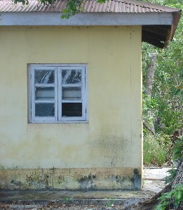

household
 bɑrɑbɑ बाराबा Etym: Jeru; जेरू. VAR: bɑrɑbo बाराबो. N सं. mat, sleeping; सोने के लिये चटाई. SD: household, घरेलू. NT: Also used for the dancing ceremony. यह नाच-गाने के अवसर में भी प्रयोग होती है।.
bɑrɑbɑ बाराबा Etym: Jeru; जेरू. VAR: bɑrɑbo बाराबो. N सं. mat, sleeping; सोने के लिये चटाई. SD: household, घरेलू. NT: Also used for the dancing ceremony. यह नाच-गाने के अवसर में भी प्रयोग होती है।.
 bɛi1 बैई Etym: Jeru; जेरू. VAR: bei बेई; bey बेय. N सं. bottle; बोतल; शीशी.
bɛi1 बैई Etym: Jeru; जेरू. VAR: bei बेई; bey बेय. N सं. bottle; बोतल; शीशी.  beibi tunʈɔlo बेईबी तून्टौलो. The bottle broke. बोतल टूट गई।. SD: household, घरेलू. SEE: bɛi2 ‘liquor’ ‘शराब बैईhm:{2}’.
beibi tunʈɔlo बेईबी तून्टौलो. The bottle broke. बोतल टूट गई।. SD: household, घरेलू. SEE: bɛi2 ‘liquor’ ‘शराब बैईhm:{2}’.
bɛitɑpʰul बैईताफूल MORPH: bɛi-tɑ-pʰul. N सं. cap, of a bottle; बोतल का ढक्कन. SD: household, घरेलू.
biu1 बीऊ N सं. incense; धूप; अगरबत्ती. o-it-cɔŋ-il biu-t-cɑl ɔ-ut cɔŋ ओईत्चौङील बीऊत्चालौऊत चौङ. He found a heap of incense while searching. उसके ढूंढने से उसे धूप का ढेर मिला।. SD: household, घरेलू. SEE: biu2 ‘light; wood-smoke’ ‘उजाला; लकड़ी का धुआं बीऊhm:{2}’.
biuɛr बीऊऐर MORPH: biu-ɛr. N सं. candle; मोमबत्ती. biu-ɛr-šueke बीऊ ऐर सूयेके. Light the candle. मोमबत्ती जला दो।. SD: household, घरेलू.
 bol3 बोल Etym: Jeru; जेरू. VAR: bolʷ बोल्व; boːl बोऽल. N सं. rope made of the Bol tree; रस्सी (बोल पेड़ से बनी हुई). SD: household, घरेलू. SEE: bol1 ‘cane’ ‘बेंत बोलhm:{1}’; bol2 ‘fish’ ‘मछली बोलhm:{2}’; bol4 ‘run away’ ‘भाग जाना बोलhm:{4}’; bol5 ‘snake’ ‘सांप बोलhm:{5}’; bol6 ‘tree’ ‘पेड़ बोलhm:{6}’.
bol3 बोल Etym: Jeru; जेरू. VAR: bolʷ बोल्व; boːl बोऽल. N सं. rope made of the Bol tree; रस्सी (बोल पेड़ से बनी हुई). SD: household, घरेलू. SEE: bol1 ‘cane’ ‘बेंत बोलhm:{1}’; bol2 ‘fish’ ‘मछली बोलhm:{2}’; bol4 ‘run away’ ‘भाग जाना बोलhm:{4}’; bol5 ‘snake’ ‘सांप बोलhm:{5}’; bol6 ‘tree’ ‘पेड़ बोलhm:{6}’.
buj बूज Etym: Bea; Bale; बेया; बाले. N सं. pot; बर्तन. SD: household, घरेलू.
 cɑetɑrɑupʰu चाएतराऊफू MORPH: cɑe-tɑrɑ-upʰu. N सं. a kind of wooden basket; एक प्रकार की लकड़ी की टोकरी. SD: household, घरेलू.
cɑetɑrɑupʰu चाएतराऊफू MORPH: cɑe-tɑrɑ-upʰu. N सं. a kind of wooden basket; एक प्रकार की लकड़ी की टोकरी. SD: household, घरेलू.
cɑlocɔfe चालोचौफे MORPH: cɑlo-cɔfe. N सं. many clothes; ढेर कपड़े. SD: household, घरेलू.
cɑŋɑ चाङा N सं. sanga, vessel used to carry water; सांगा (पानी ढोने का बर्तन). SD: household, घरेलू.
cɑʈɑwe चाटावे N सं. mat; चटाई. SD: household, घरेलू.
 cɑytɑrɑoco चायताराओचो MORPH: cɑy-tɑrɑ-oco. N सं. net basket; जालीदार टोकरी. SD: household, घरेलू.
cɑytɑrɑoco चायताराओचो MORPH: cɑy-tɑrɑ-oco. N सं. net basket; जालीदार टोकरी. SD: household, घरेलू.
ciwbɑ चीवबा N सं. cradle; पालना; झूला. SD: household, घरेलू.
 cɔm1 चौम N सं. wooden basket; लकड़ी की टोकरी. SD: household, घरेलू. SEE: cɔm2 ‘betelnut’ ‘सुपारी चौमhm:{2}’; cɔm3 ‘pointed object, any’ ‘नुकीला औज़ार, कोई भी चौमhm:{3}’; cɔm4 ‘shark, small’ ‘शार्क, छोटी चौमhm:{4}’; cɔm5 ‘stick, wooden’ ‘छड़, लकड़ी की चौमhm:{5}’; cɔm6 ‘tree’ ‘पेड़ चौमhm:{6}’.
cɔm1 चौम N सं. wooden basket; लकड़ी की टोकरी. SD: household, घरेलू. SEE: cɔm2 ‘betelnut’ ‘सुपारी चौमhm:{2}’; cɔm3 ‘pointed object, any’ ‘नुकीला औज़ार, कोई भी चौमhm:{3}’; cɔm4 ‘shark, small’ ‘शार्क, छोटी चौमhm:{4}’; cɔm5 ‘stick, wooden’ ‘छड़, लकड़ी की चौमhm:{5}’; cɔm6 ‘tree’ ‘पेड़ चौमhm:{6}’.
cɔrɔkʰ3 चौरौख N सं. support of wood; लकड़ी का सहारा. SD: household, घरेलू. NT: This wood is used as a support in building houses. This wood also forms the sides of the canoe, the boya dongi. यह लकड़ी घर बनाने के काम भी आती है। बोया डोंगी के किनारे लगाई जाने वाली लकड़ी।. SEE: cɔrɔkʰ1 ‘anchorage’ ‘लंगर डालने का स्थान चौरौखhm:{1}’; cɔrɔkʰ2 ‘horizontal bars of outrigger’ ‘बोया की आड़ी डंडियां चौरौखhm:{2}’.
dɑkɑr1 दाकार Etym: Bea; बेया. VAR: ɖɑkɑr डाकार; ɖɑkɑɽ डाकाड़. N सं. wooden basket used for carrying water; पानी लाने के लिए लकड़ी की टोकरी. SD: household, घरेलू. SEE: ɖɑkɑr ‘potato’ ‘आलू डाकार ’; dɑkɑr2 ‘this (proximate)’ ‘यह (निकटस्थ) दाकारhm:{2}’.
ebɔʈ एबौट N सं. parcel; पार्सल. SD: household, घरेलू.
ecer एचेर N सं. thing to be kept carefully; संभाल कर रखनेवाली चीज़. SD: household, घरेलू.
ekɑte coːke2 एकाते चौऽके N सं. post, for house-building; मकान के लिए खंबा. SD: household, घरेलू. SEE: ekɑte coːke1 ‘fill’ ‘भर कर रखो एकातेhm:{ }चौऽके}1’.
ektereɔpʰe एक्तेरेऔफे MORPH: ek-ter-eɔpʰe. N सं. bundle; गठरी. SD: household, घरेलू.
emɑi एमाई Etym: Little Andaman (Onge); ओंगे. N सं. mat; चटाई. SD: household, घरेलू.
esoʈ एसोट VAR: esoːʈ एसोऽट. N सं. line; fence; लकीर; बाड़. SD: household, घरेलू.
esɔtte एसौत्ते N सं. fence posts; बाड़ के खूंटे. SD: household, घरेलू.
etʰɔr एथौर N सं. knitted mat of leaves used for the base of the roof; पत्तों की सिली हुई चटाई जो छत बनाने के काम आती है. SD: household, घरेलू.
ettɑːrɔːwo एत्ताऽरौऽवो N सं. fence; बाड़; घेरा. SD: household, घरेलू.
ɛcoːp ऐचौऽप MORPH: ɛ-coːp. N सं. a kind of rope; एक प्रकार की रस्सी. SD: household, घरेलू.
ɛibiʈki ऐईबीट्की MORPH: ɛi-biʈki. N सं. balance; बहंगी. ʈʰ-ɛi-biʈki ठैईबीट्की. my balance. मेरी बहंगी. SD: household, घरेलू. NT: A balance-like structure made of two containers suspended on either end of a central pole, used to carry children or the sick. बच्चों या बीमार को ले जाने के लिए प्रयुक्त होती है।.
 ɛkuropʰu ऐकूरोफू MORPH: ɛ-kuro-pʰu. N सं. sharp knife; तेज़ धार वाली छुरी. SD: tool, औज़ार, household, घरेलू.
ɛkuropʰu ऐकूरोफू MORPH: ɛ-kuro-pʰu. N सं. sharp knife; तेज़ धार वाली छुरी. SD: tool, औज़ार, household, घरेलू.
ɛrcɑrɑ2 ऐरचारा MORPH: ɛr-cɑrɑ. N सं. wood shaving; sawdust; लकड़ी का घिसा हुआ टुकड़ा; बुरादा. SD: household, घरेलू. SEE: ɛrcɑrɑ1 ‘chips; pieces, very fine cut’ ‘कतला; टुकड़े, बहुत महीन कटे हुए ऐरचाराhm:{1}’.
 inotɑbɛreŋ ईनोताबैरेङ MORPH: ino-tɑ-bɛreŋ. N सं. bucket; बालटी. SD: household, घरेलू. NT: An indigenous container used for carrying water. चिरकाल से चली आ रही ख़ास अण्डमानी बालटी जो पानी लाने के काम आती है।.
inotɑbɛreŋ ईनोताबैरेङ MORPH: ino-tɑ-bɛreŋ. N सं. bucket; बालटी. SD: household, घरेलू. NT: An indigenous container used for carrying water. चिरकाल से चली आ रही ख़ास अण्डमानी बालटी जो पानी लाने के काम आती है।.
inotkʰu ईनोत्खू MORPH: ino-ot-kʰu. N सं. drinking water; पीने का पानी. SD: household, घरेलू.
jero1 जेरो N सं. a kind of basket made of cane; एक प्रकार की बेंत की बनी टोकरी. SD: household, घरेलू. SEE: jero2 ‘come soon’ ‘जल्दी आओ जेरोhm:{2}’.
kɑtɑ काता Etym: North Andaman; उत्तरी अण्डमान. N सं. a cut-piece or segment used only when it is separated from a whole; किसी चीज़ का एक कटा हुआ हिस्सा. julu-tut-kɑtɑ; julu-tʰu-kɑtɑ जूलूतूत्काता; जूलूथूकाता. a piece of cloth. एक कपड़े का हिस्सा. pʰɔʈmu-tuŋ-kɑtɑ; pʰɔʈmu-tɛr-kɑtɑ फौटमूतूङकाता; फौटमूतैरकाता. a piece of an oar. पतवार का टुकड़ा. rɛʈ-tɛr-kɑtɑ रैटतैरकाता. a piece of a bamboo. बांस का टुकड़ा. ɑʈ-tot-kɑtɑ आटतोत्काता. wood chip. लकड़ी का टुकड़ा. SD: household, घरेलू, flora, फूल-पत्ती.
 kɛnmo कैन्मो N सं. thread; धागा. SD: household, घरेलू. NT: These are rolls of phɑrɑko (a creeper) thread. फाराको लता के धागे।.
kɛnmo कैन्मो N सं. thread; धागा. SD: household, घरेलू. NT: These are rolls of phɑrɑko (a creeper) thread. फाराको लता के धागे।.
 kobu2 कोबू VAR: kɔbu कौबू; kɔbɔ कौबौ; kɔwbu कौवबू. N सं. umbrella; छतरी; छाता. SD: household, घरेलू. SEE: kobu1 ‘tree’ ‘पेड़ कोबूhm:{1}’.
kobu2 कोबू VAR: kɔbu कौबू; kɔbɔ कौबौ; kɔwbu कौवबू. N सं. umbrella; छतरी; छाता. SD: household, घरेलू. SEE: kobu1 ‘tree’ ‘पेड़ कोबूhm:{1}’.
 |
 koʈʰorɛmo कोठोरैमो N सं. a kind of small bowl; एक प्रकार का छोटा कटोरा.
koʈʰorɛmo कोठोरैमो N सं. a kind of small bowl; एक प्रकार का छोटा कटोरा.  u-išo-koʈʰorɛmo ऊईशोकोठोरैमो. his/her bowl. उसका बर्तन. SD: household, घरेलू.
u-išo-koʈʰorɛmo ऊईशोकोठोरैमो. his/her bowl. उसका बर्तन. SD: household, घरेलू.
kɔbu कौबू VAR: kɔbɔ कौबौ. N सं. plates made up of silai patti; सिलाई पट्टी से बनी हुई तश्तरी. SD: household, घरेलू. NT: This plate is used for keeping food. खाना परोसने व सहेजकर रखने में प्रयुक्त होती है।.
kɔt2 कौत VAR: kɔːt कौऽत. N सं. roof of the house; घर की छत. SD: household, घरेलू. SEE: kɔt1 ‘cough’ ‘खांसना कौतhm:{1}’; kɔt3 ‘soil; statue of deity’ ‘मिट्टी; देवी की मूर्ति कौतhm:{3}’; kɔt4 ‘tree’ ‘पेड़ कौतhm:{4}’.
kursiː कूरसीऽ Etym: Hindi; हिन्दी. N सं. chair; कुरसी. SD: household, घरेलू.
lele लेले VAR: leːle लेऽले. N सं. swing; cradle; पालना; झूला. SD: household, घरेलू.
lico लीचो VAR: lecɔ लेचौ; licɔ लीचौ. N सं. basket; टोकरी. SD: household, घरेलू.
liknu लीक्नू MORPH: lik-nu. N सं. thread; धागा. SD: household, घरेलू.
meocop मेओचोप MORPH: meo-cop. N सं. mirror; शीशा. SD: household, घरेलू. SEE: meɔ ‘glass; stone’ ‘शीशा; पत्थर मेऔ ’.
meɔ मेऔ N सं. glass; stone; शीशा; पत्थर. SD: household, घरेलू. SEE: meocop ‘mirror’ ‘शीशा मेओचोप ’.
nutisse नूतीस्से N सं. bed; पलंग. SD: household, घरेलू.
nuttise नूत्तीसे N सं. bedsheet; चादर. SD: household, घरेलू.
ɲopʰul ञोफूल VAR: ɲɔɸur ञौफूर. N सं. bed; mat; बिस्तर; चटाई. ɲɔpʰulkɔm ञौफूलकौम. make bed. बिस्तर बनाना. SD: household, घरेलू.
ɲotɑpʰoŋ ञोताफोङ MORPH: ɲo-tɑ-pʰoŋ. VAR: ɲɔpʰoŋ ञौफोङ; ɲyɔtɑɸoŋ ञ्यौताफोङ. N सं. opening of the house; courtyard; threshold; घर का अगला हिस्सा; आंगन; देहरी. SD: household, घरेलू.
ɲotɑrɑtɑŋ2 ञोताराताङ MORPH: ɲo-tɑrɑ-tɑŋ. N सं. upper side of the roof; छप्पर का ऊपरी हिस्सा. SD: household, घरेलू. SEE: ɲotɑrɑtɑŋ1 ‘above the house’ ‘घर के ऊपर ञोताराताङhm:{1}’.
ɲotɑtecɔ ञोतातेचौ MORPH: ɲo-tɑ-tecɔ. N सं. middle beam on which a house stands; मुख्य धरन जिस पर मकान टिका होता है. SD: household, घरेलू.
ɲotɑʈɔkʰɔpʰɑreɔ ञोताटौखौफारेऔ MORPH: ɲo-tɑ-ʈɔkʰɔ-pʰɑreɔ. N सं. floor of the house; घर का फ़र्श. SD: household, घरेलू.
ɲotottɑrɑ ञोतोत्तारा MORPH: ɲo-tot-tɑrɑ. N सं. roof; छत. SD: household, घरेलू.
ɲyošoi ञ्योशोई MORPH: ɲyo-šoi. Etym: Hindi; हिन्दी. N सं. needle; घरेलू सूई. SD: household, घरेलू.
 oco ओचो VAR: ocɔ ओचौ; oːcɔ ओऽचौ; ɔco औचो; ɔcɔ औचौ. N सं. bag; थैला. SD: household, घरेलू.
oco ओचो VAR: ocɔ ओचौ; oːcɔ ओऽचौ; ɔco औचो; ɔcɔ औचौ. N सं. bag; थैला. SD: household, घरेलू.
oːprɔ ओऽपरौ N सं. window; खिड़की. SD: household, घरेलू.
 |
 pʰɑrɑko2 फाराको VAR: ɸɑrɑko फाराको. N सं. rope; रस्सी. SD: household, घरेलू. NT: Made from the bark of the Pharako tree. यह रस्सी फाराको बेल से बनाई जाती है।. SEE: pʰɑrɑko1 ‘plant; creeper’ ‘पौधा; बेल फाराकोhm:{1}’; pʰɑrɑko3 ‘thread’ ‘धागा फाराकोhm:{3}’.
pʰɑrɑko2 फाराको VAR: ɸɑrɑko फाराको. N सं. rope; रस्सी. SD: household, घरेलू. NT: Made from the bark of the Pharako tree. यह रस्सी फाराको बेल से बनाई जाती है।. SEE: pʰɑrɑko1 ‘plant; creeper’ ‘पौधा; बेल फाराकोhm:{1}’; pʰɑrɑko3 ‘thread’ ‘धागा फाराकोhm:{3}’.
pɑrepɑ पारेपा Etym: Bea; बेया. N सं. mat; चटाई. SD: household, घरेलू.
pec पेच N सं. pot; बर्तन. SD: household, घरेलू.
pʰecɑr2 फेचार Etym: Khora; Sare; खोरा; सारे. N सं. something kept for a long time; जो काफी समय तक रखा या रखी हो. SD: household, घरेलू. SEE: pʰecɑr1 ‘one who has everything’ ‘सर्वसंपन्न फेचारhm:{1}’.
pʰɛc फैच N सं. a kind of pot for cooking food; डेगची. SD: household, घरेलू.
pʰirsup फीरसूप MORPH: pʰir-sup. N सं. a kind of basket made of cane; एक प्रकार की टोकरी. SD: household, घरेलू. NT: Used to keep left over food. बेंत से बनी इस टोकरी में बचा हुआ खाना रखा जाता है।.
pʰoroɖuletmo2 फोरोडूलेत्मो N सं. ladder; सीढ़ी. SD: household, घरेलू. SEE: pʰoroɖuletmo1 ‘frog’ ‘मेंढक फोरोडूलेत्मोhm:{1}’.
pʰɔrterpʰir फौरतेरफीर MORPH: pʰɔr-ter-pʰir. N सं. knife made of bamboo; बांस का चाकू. SD: tool, औज़ार, household, घरेलू.
reoʈɔye रेओटौये MORPH: reo-ʈɔye. N सं. lock and key; ताला और चाबी. SD: household, घरेलू.
rom रोम Etym: Bo; बो. N सं. cap; ढक्कन. SD: household, घरेलू.
 šup शूप VAR: sup सूप; suːp सूऽप. N सं. basket; bucket; टोकरी; बालटी. SD: household, घरेलू. NT: Cane basket used to carry potatoes. बेंत की टोकरी जिसमें आलू आदि रखे जाते हैं।.
šup शूप VAR: sup सूप; suːp सूऽप. N सं. basket; bucket; टोकरी; बालटी. SD: household, घरेलू. NT: Cane basket used to carry potatoes. बेंत की टोकरी जिसमें आलू आदि रखे जाते हैं।.
tɑkʰuro ताखूरो N सं. slope, of roof; छत की ढलान. SD: household, घरेलू.
 tɑono ताओनो MORPH: tɑ-ɑono. N सं. chair; something to sit on; कुर्सी; कोई भी चीज़ जो बैठने के लिए प्रयुक्त हो. tɑ-ono-bi-enoke ताओनोबीएनोके. Make something to sit on (chair). बैठने के लिए कुछ बनाओ।. SD: household, घरेलू.
tɑono ताओनो MORPH: tɑ-ɑono. N सं. chair; something to sit on; कुर्सी; कोई भी चीज़ जो बैठने के लिए प्रयुक्त हो. tɑ-ono-bi-enoke ताओनोबीएनोके. Make something to sit on (chair). बैठने के लिए कुछ बनाओ।. SD: household, घरेलू.
tɑpbɛc तापबैच MORPH: tɑp-bɛc. N सं. board; तख्ता. SD: household, घरेलू.
tɑr तार Etym: Jeru; जेरू. N सं. bucket; बालटी. SD: household, घरेलू.
tɑrɑmeʈʰiek तारामेठीएक MORPH: tɑrɑ-meʈʰiek. N सं. chairs; कुर्सियां. emboil ŋum tɑrɑ meʈʰiek एम्बोईल ङूम तारा मेठीएक. He got some chairs, etc., on his marriage. उसे अपनी शादी में कुछ कुर्सी-वुर्सी मिली।. SD: household, घरेलू.
tɑrɑtɑŋ ताराताङ MORPH: tɑrɑ-tɑŋ. N सं. thatch; छप्पर. SD: household, घरेलू.
tɑtuŋ तातूङ VAR: tɑːtuŋ ताऽतूङ; tɑtoŋ तातोङ. N सं. courtyard; घर का आंगन. ɑ-boɑ ɑ-nu ik-jirɑ-ø tɑtoŋ-e it-šir-o आबोआ आनू ईक्जीरा तातोङे ईत्शीरो. Boa told Nu and got the courtyard washed. बोआ ने नू से कहकर आंगन साफ़ करवाया।. SD: household, घरेलू.
teːmol तेऽमोल N सं. handle, of a hand fan; पंखे का हाथ. SD: household, घरेलू.
teɔleɔ तेऔलेऔ N सं. knife, little; छोटी छुरी. SD: household, घरेलू.
terepʰilebor तेरेफीलेबोर MORPH: tere-pʰile-bor. N सं. a twig used as a toothbrush; दातुन. SD: household, घरेलू.
tɛrɛmlɔʈ तैरैमलौट MORPH: tɛr-ɛm-lɔʈ. N सं. wooden stick; लकड़ी की छड़ी. SD: household, घरेलू.
 |
tɛrolotʰ तैरोलोथ MORPH: tɛro-lotʰ. VAR: tiru-luʈʰ तीरूलूठ. N सं. window; खिड़की. tɛrolotʰ ɑkɑiko तैरोलोथ आकाईको. The window opened. खिड़की खुली।. SD: household, घरेलू.
tokɑtɑ तोकाता MORPH: to-kɑtɑ. N सं. piece; cut piece; टुकड़ा; कटा हुआ टुकड़ा. SD: household, घरेलू.
ʈʰeburɔŋoet ठेबूरौङोएत MORPH: ʈʰe-burɔ-ŋoet. N सं. deity, placed by the side of the house; घर के बगल में रखा जाने वाला देवता. SD: household, घरेलू.
ʈʰibukʰe ठीबूखे MORPH: ʈʰi-bukʰe. Etym: Bo. N सं. wall; दीवार. SD: household, घरेलू.
 |
ʈʰitɑpʰoŋ ठीताफोङ N सं. door; दरवाज़ा. SD: household, घरेलू.
ʈʰiterɖit ठीतेरडीत MORPH: ʈʰi-ter-ɖit. VAR: ʈiː-ter-ɖiːʈ टीऽतेरडीऽट. N सं. window; खिड़की. SD: household, घरेलू.
ʈʰitɛrbɛi1 ठीतैरबैई MORPH: ʈʰi-tɛr-bɛi. VAR: ʈʰibeːl ठीबेऽल. N सं. broom; झाड़ू. SD: household, घरेलू. SEE: ʈʰitɛrbɛi2 ‘broom’ ‘झाड़ू लगाना ठीतैरबैईhm:{2}’.
ʈiːʈɑːlɑrɑ टीऽटाऽलारा MORPH: ʈiː-ʈɑː-lɑrɑ. N सं. bell; घंटी. SD: household, घरेलू.
ʈʰiʈɑrɑtɑ1 ठीटाराता MORPH: ʈʰi-ʈɑrɑ-tɑ. VAR: ʈiːtɑrɑːtɑ टीऽताराऽता. N सं. floor, of house; घर का फ़र्श. SD: household, घरेलू. SEE: ʈʰiʈɑrɑtɑ2 ‘level ground; flat land’ ‘समतल मैदान; समतल ज़मीन ठीटाराताhm:{2}’.
ʈɔkʰocoŋ टौखोचोङ MORPH: ʈɔkʰo-coŋ. N सं. sharp wooden stick; पतली लकड़ी की छड़ी. SD: household, घरेलू. NT: It is used for stirring big pieces of meat while cooking. पकते हुए मांस के बड़े-बड़े टुकड़ों को हिलाने के लिए भी प्रयुक्त होती है।.
ʈɔkʰɔtei टौखौतेई MORPH: ʈɔkʰɔ-tei. N सं. a kind of red gum; एक प्रकार की लाल गोंद. SD: flora, फूल-पत्ती, household, घरेलू. NT: From a tree called ‘bathe’. बाथे पेड़ से निकलने वाली गोंद।.
ʈɔkʰɔʈɛc2 टौखौटैच MORPH: ʈɔkʰɔ-ʈɛc. N सं. rupee; रुपया. SD: household, घरेलू. SEE: ʈɔkʰɔʈɛc1 ‘leaf’ ‘पत्ता टौखौटैचhm:{1}’.
ʈɔːlɔŋ टौऽलौङ N सं. wax; मोम. SD: household, घरेलू.
uku1 ऊकू Etym: Little Andaman (Onge); ओंगे. N सं. bucket; बालटी. SD: household, घरेलू. SEE: uku-2 ‘clitic, third singular subject (exclusive)’ ‘क्लिटिक, तृतीय एकवचन कर्तावाचक (अनन्य) ऊकू-hm:{2}’.
upʰu ऊफू N सं. a kind of vessel made up of leaves; एक प्रकार का बर्तन जो पत्तों से बनाया जाता है, दोना. SD: household, घरेलू.
utjulutercɔkʰ ऊत्जूलूतेरचौख MORPH: ut-julu-ter-cɔkʰ. N सं. mirror; शीशा. SD: household, घरेलू.